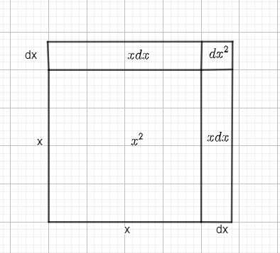
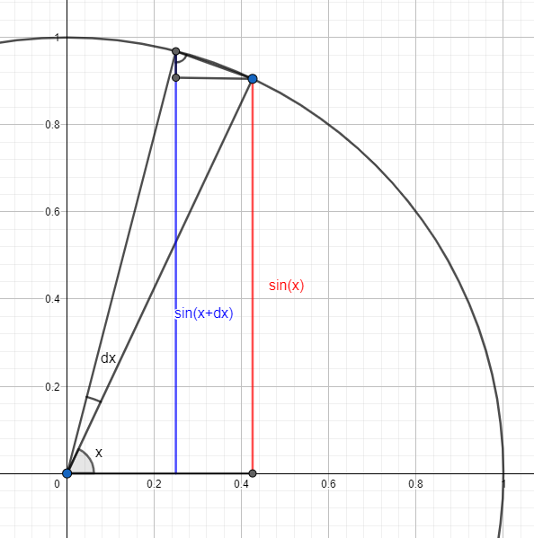
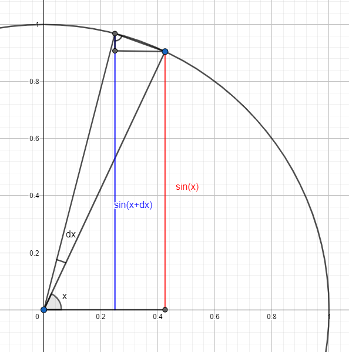

Derivative
Given a function \( f(x): R \rightarrow R \), the derivative is defined as:
\( f'(x) = \lim\limits_{dx \rightarrow 0} \dfrac{f(x+dx) - f(x)}{dx} \)
if the limit exists.
The interpretation of the derivative is very easy to understand. If we have a function \(f(x)\), then \( f(x+dx) - f(x) \) is the difference of the function between two very near points (the points \( x\) and \(x+dx\)). It is a measure of how much \(f \) is changing close to \(x\). The denominator is the length of the step taken from \(x\) to \(x+dx\).
Therefore, the quotient \( \dfrac{f(x+h)-f(x)}{h} \) is just the ratio of the change in the value of \(f\) to the change in value of \(x\), we could express it as \( \dfrac{\Delta f}{\Delta x} \)
When we take the limit, we are basically making the step as small as possible, and therefore, the derivative measures the instantaneous rate of change of the function \(f\) at the point \( x\).
Derivative of \(x^2\)
Consider the function \(f(x) = x^2\) and lets calculate its derivative. To calculate it, we could directly use the definition of the derivative:
\( f'(x) = \lim\limits_{dx \rightarrow 0} \dfrac{f(x+dx) - f(x)}{dx} = \lim\limits_{dx \rightarrow 0} \dfrac{(x+dx)^2 - x^2}{dx} =\)
\( =\lim\limits_{dx \rightarrow 0} \dfrac{2x dx + dx^2}{dx} = \lim\limits_{dx \rightarrow 0} (2x + dx) = 2x\)
But there is a geometrical way of calculating the derivative. For that, we first define the function in a more geometrical way.
Originally, we think of \(x^2\) as a function that takes a real number and returns that number squared. But we will change our interpretation and think of \(x^2\) as a function that takes in a real number, then draws a line of length \(x\), constructs a square with this side length and calculates its area (which will give a result of \(x^2\) )
 Square of length \(x\)
Square of length \(x\)
Both definitions are the same (well, the second one only makes sense for positive numbers), so we may calculate the derivative using the geometrical definition instead of the analytical one.
For using the definition, we first need to calculate \(f(x+dx) - f(x) \), for this, we expand the side length by an amount \(dx\) and create a new square of side length \(x+dx\). Then, the area of the big square is \(f(x+dx)\) and the area of the small one is still \(f(x) = x^2\).

Square of length \(x\) and \(x+dx\)
Then, the difference between the areas of the big square and the small one is the value of \( f(x+dx) - f(x)\). Seeing the figure we may calculate these difference in areas by dividing it into a square and two rectangles. We can see that the difference is \(f(x+dx)-f(x) = xdx+xdx+dx^2 = 2xdx + dx^2\)
When the step \(dx\) is small enough (remember we need to take the limit \(dx \rightarrow 0\)), then \(dx^2\) tends to 0 much much faster than \(2x dx\), so the difference is \( f(x+dx) - f(x) = 2xdx\) when \(dx\) is small enough
So we calculated this difference geometrically, now we can see that the ratio between the difference in \(f\) and the difference in \(x\) (which is \(dx\)) is \(\dfrac{df}{dx} = \dfrac{2xdx}{dx} = 2x \)
Derivative of \( \sin(x)\)
In this case, we will turn directly to the geometrical definition. As I've written in the Trigonometric functions explanaition, given an angle \(x\) in the unit circle, \(\sin(x)\) is defined to be the length of the red line in the figure:
 \(\sin(x) \)
To calculate the derivative, we first need to step up \(x\) by a small amount \(dx\) and see how \(\sin(x)\) changes. So, lets add an amount \(dx\) to the angle and calculate the sine again.

\(\sin(x)\) and \(\sin(x+dx\)
We need to calculate how much did the function change, for that, we need the difference between the blue and red lines. We will need to zoom in into the small triangle drawn in the figure above.
\(\sin(x) \)
To calculate the derivative, we first need to step up \(x\) by a small amount \(dx\) and see how \(\sin(x)\) changes. So, lets add an amount \(dx\) to the angle and calculate the sine again.

\(\sin(x)\) and \(\sin(x+dx\)
We need to calculate how much did the function change, for that, we need the difference between the blue and red lines. We will need to zoom in into the small triangle drawn in the figure above.
 Zoomed in \(\sin(x)\) and \(\sin(x+dx)\)
When we zoom in, we see that the blue line (\( \sin(x+dx)\)) is slightly larger than \(\sin(x)\), we need to calculate this difference. For that, we draw the triangle shown in the figure. This is a rectangular triangle. We can see that \(dx\) is the arc length between the two points (because that is the magnitude of the small angle \(dx\) and when we look close enough, the circle is almost a straight line). Also, it is easy to prove by using similarity of triangles that the upper angle of this little triangle measures \(x \).
Zoomed in \(\sin(x)\) and \(\sin(x+dx)\)
When we zoom in, we see that the blue line (\( \sin(x+dx)\)) is slightly larger than \(\sin(x)\), we need to calculate this difference. For that, we draw the triangle shown in the figure. This is a rectangular triangle. We can see that \(dx\) is the arc length between the two points (because that is the magnitude of the small angle \(dx\) and when we look close enough, the circle is almost a straight line). Also, it is easy to prove by using similarity of triangles that the upper angle of this little triangle measures \(x \).
With this, and using that the triangle is rectangular, we can see that the difference of length between the two lines has a length of \(\cos(x) dx\).
Therefore, if we change the input of the function by a small amount \(dx\), the value of the function changes by \( \cos(x) dx \), therefore, the rate of change, or derivative, is \(\cos(x)\).